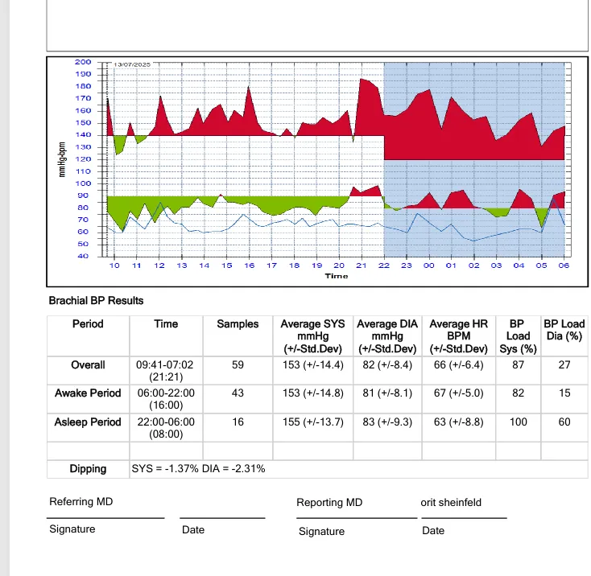
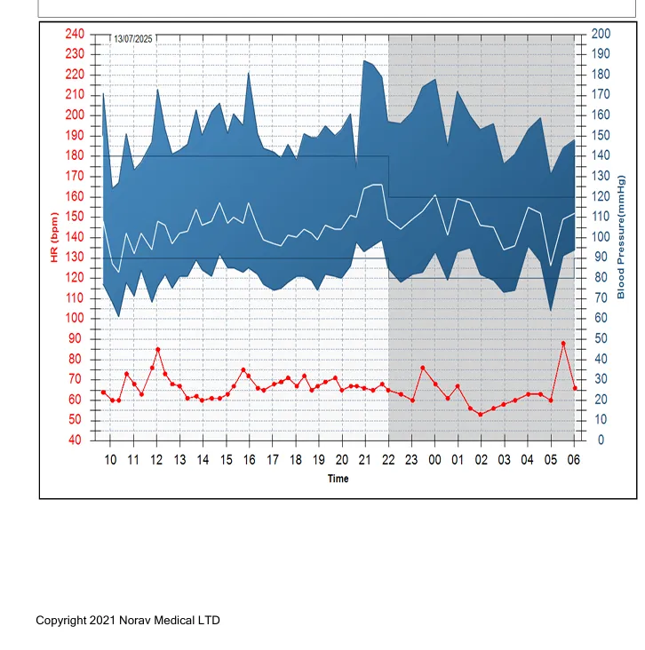
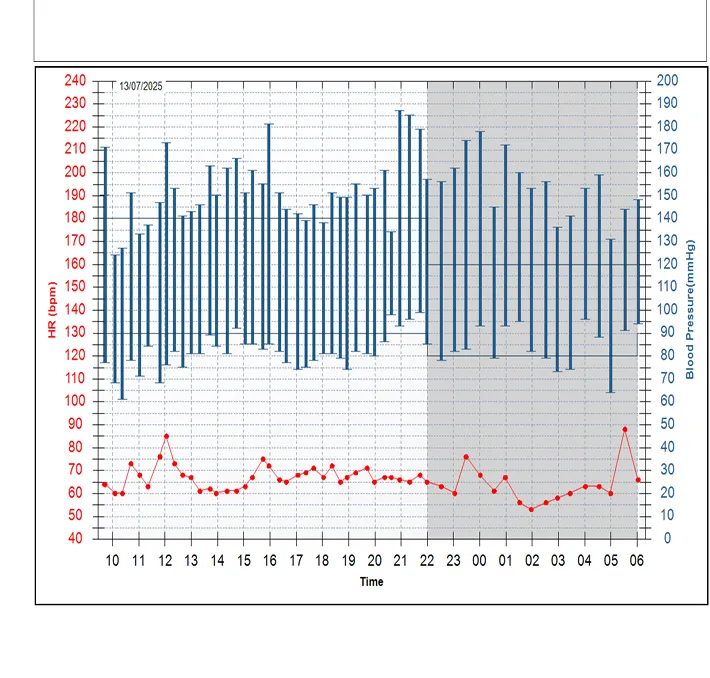
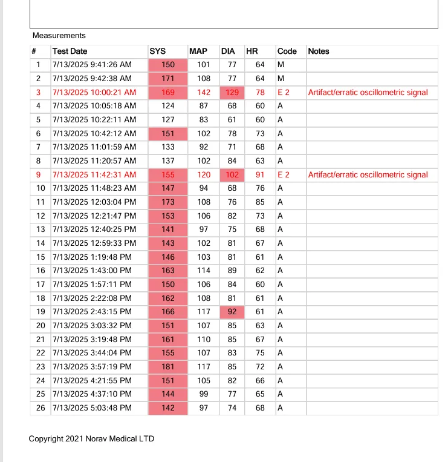
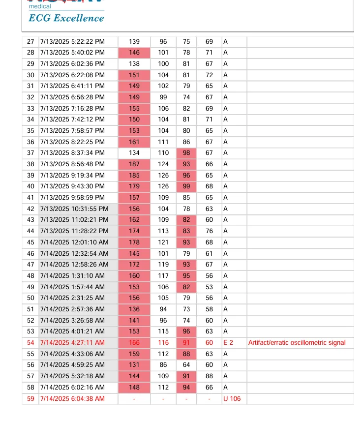
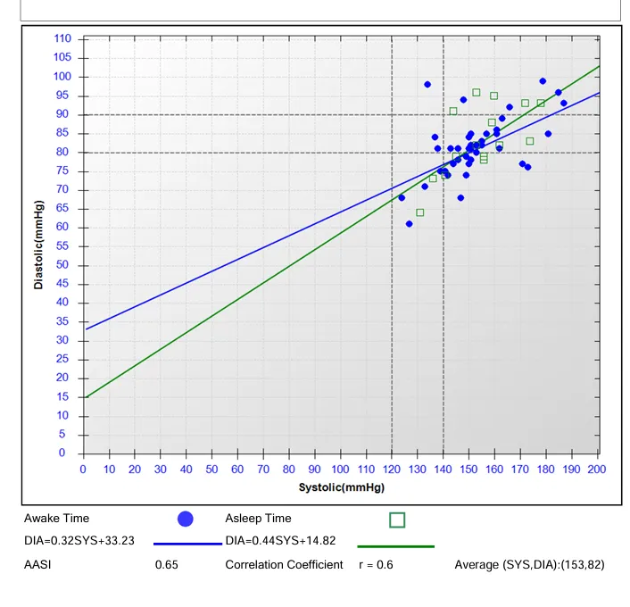
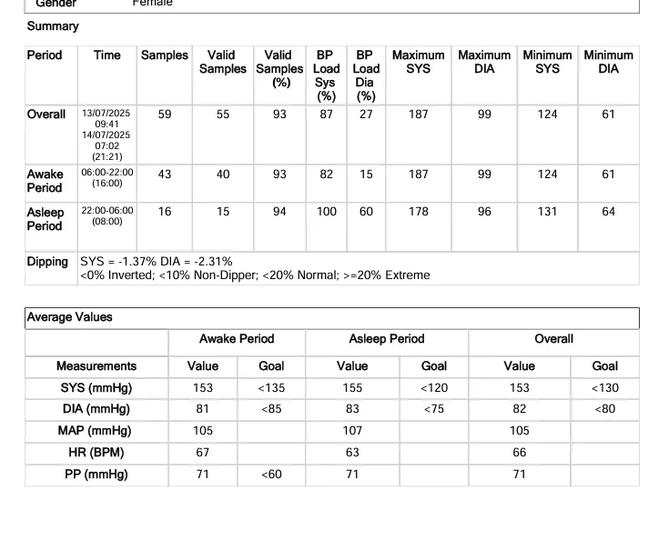

🩺 הסבר אישי לתוצאות הולטר לחץ דם
BP1 – גרף הלחץ הכללי במהלך 24 שעות
🩺 מה רואים כאן?
זהו הגרף הראשי שמראה את לחץ הדם שלך לאורך 24 שעות רצופות. הקו הכחול מייצג את הלחץ הסיסטולי (המספר העליון), והקו האדום מייצג את הדופק. הרקע הכחול מסמן את שעות הלילה.
📌 תובנות חשובות
- הלחץ הסיסטולי נע בין 120-220 מ"מ כספית - ערכים גבוהים מהנורמה
- בלילה (האזור הכחול) הלחץ לא יורד כמו שצריך - תופעה שנקראת "Non-dipping"
- יש עליות חדות בלחץ בשעות הבוקר המוקדמות
- הדופק (הקו האדום) נשאר יציב יחסית סביב 60-70 לדקה
BP2 – תוצאות מסכמות ותקופות שינה/ערות
🩺 מה רואים כאן?
דף זה מציג את הממוצעים המדויקים של לחץ הדם בתקופות שונות, כולל הגרף הצבעוני שמראה את התפלגות הלחץ לאורך היום.
📌 תובנות חשובות
- ממוצע כללי: 153/82 מ"מ כספית - גבוה מהנורמה
- בתקופת הערות: 153/81 - גבוה (יעד: מתחת ל-135/85)
- בתקופת השינה: 155/83 - גבוה מאוד (יעד: מתחת ל-120/70)
- BP Load (עומס לחץ): 87% סיסטולי, 27% דיאסטולי
- Dipping: -1.37% סיסטולי - אמור לרדת לפחות 10%
BP3 – גרף מפורט עם מדידות בודדות
🩺 מה רואים כאן?
גרף זה מציג את כל המדידות הבודדות שנלקחו כל 30 דקות במהלך היום. כל קו כחול מייצג מדידה אחת, והגובה שלו מראה את רמת הלחץ באותו רגע.
📌 תובנות חשובות
- נרואה שונות גדולה בין המדידות - מ-100 עד 220 מ"מ כספית
- רוב המדידות בשעות היום נמצאות מעל 140 מ"מ כספית
- גם בלילה (האזור האפור) הלחץ נשאר גבוה יחסית
- יש כמה מדידות קיצוניות מעל 200 מ"מ כספית
BP4 – טבלת מדידות מפורטת - חלק א'
🩺 מה רואים כאן?
טבלה מפורטת של כל המדידות הבודדות עם השעה המדויקת. העמודות מציגות: מספר המדידה, תאריך ושעה, לחץ סיסטולי (SYS), לחץ דיאסטולי (DIA), דופק (HR), וקוד איכות המדידה.
📌 תובנות חשובות
- בבוקר (9:41-11:20): ערכים גבוהים - 150-171 מ"מ כספית
- אחר הצהריים: המשך ערכים גבוהים - 141-181 מ"מ כספית
- מדידות מס' 3 ו-9 סומנו כ-"E2 - Artifact/erratic" - מדידות לא מהימנות
- הדופק נשאר יציב בין 60-91 לדקה - זה תקין
BP5 – טבלת מדידות מפורטת - חלק ב'
🩺 מה רואים כאן?
המשך הטבלה המפורטת, מציגה את המדידות מהערב ועד הבוקר. כאן רואים את התנהגות לחץ הדם בשעות הלילה ובשעות הבוקר המוקדמות.
📌 תובנות חשובות
- בערב (17:00-23:00): ערכים גבוהים - 139-187 מ"מ כספית
- בלילה (00:00-06:00): הלחץ לא יורד כמצופה - 131-178 מ"מ כספית
- מדידה מס' 54 סומנה כ-"E2 - Artifact" - מדידה לא מהימנה
- המדידה האחרונה (59) נכשלה - "U 106"
BP6 – גרף קורלציה בין לחץ סיסטולי ודיאסטולי
🩺 מה רואים כאן?
גרף זה מראה את הקשר בין הלחץ הסיסטולי (ציר X) לדיאסטולי (ציר Y). כל נקודה כחולה מייצגת מדידה בזמן ערות, וכל ריבוע ירוק מייצג מדידה בזמן שינה.
📌 תובנות חשובות
- מקדם קורלציה: r = 0.6 - קשר חיובי בינוני
- ממוצע כללי: 153/82 מ"מ כספית
- AASI (מדד נוקשות עורקים): 0.65 - מעל 0.5 נחשב גבוה
- רוב הנקודות נמצאות מעל הקווים הירוקים - מעל הנורמה
BP7 – גרפים עגולים - התפלגות ערכים לפי זמנים

🩺 מה רואים כאן?
גרפים עגולים צבעוניים המציגים את אחוז הזמן שבו לחץ הדם היה בטווחים שונים. כל גרף מחולק לשלושה צבעים: ירוק (תקין), אדום (גבוה מדי), וצהוב (מעט גבוה).
📌 תובנות חשובות
- לחץ סיסטולי ביום: 82.5% מהזמן גבוה מדי (אדום), רק 10% תקין
- לחץ סיסטולי בלילה: 100% מהזמן גבוה מדי - מצב חמור!
- לחץ דיאסטולי ביום: 80% מהזמן תקין - מצב טוב יחסית
- לחץ דיאסטולי בלילה: 60% מהזמן גבוה מדי
BP8 – סיכום סופי ומטרות טיפול
🩺 מה רואים כאן?
זהו דף הסיכום הסופי והחשוב ביותר שמציג את כל הנתונים בצורה מסודרת ומשווה אותם למטרות הטיפול הרצויות. הדף מחולק לשני חלקים עיקריים: סיכום תקופות ומדידות, וטבלת ערכים ממוצעים מול יעדים.
📌 תובנות חשובות מהחלק העליון
- סה"כ מדידות: 59 מדידות, מתוכן 55 תקינות (93%)
- BP Load כללי: 87% סיסטולי, 27% דיאסטולי - אומר שברוב הזמן הלחץ היה גבוה
- בתקופת ערות: BP Load של 82% סיסטולי - גבוה מאוד
- בתקופת שינה: BP Load של 100% סיסטולי - כל המדידות היו גבוהות!
- Dipping: -1.37% סיסטולי - אמור לרדת לפחות 10%
📊 השוואה לערכי יעד (החלק התחתון)
- בתקופת ערות:
- נמדד: 153/81 | יעד: <135/85 - לא מאוזן
- בתקופת שינה:
- נמדד: 155/83 | יעד: <120/75 - גבוה מאוד
- ממוצע כללי:
- נמדד: 153/82 | יעד: <130/80 - מעל היעד
- לחץ דופק (PP): 71 מ"מ כספית | יעד: <60 - מעיד על נוקשות עורקים
- ערך מקסימלי: 187/99 - עלייה משמעותית שדורשת תשומת לב
- ערך מינימלי: 124/61 - מראה שיש פוטנציאל לירידה
- טווח המדידות: רחב מאוד - מעיד על חוסר יציבות
- טיפול תרופתי: התחלה מיידית עם שילוב תרופות
- מיקוד לילי: לפחות תרופה אחת בערב לטיפול ב-Non-dipping
- מעקב צמוד: בדיקת הולטר חוזרת אחרי 3-4 חודשים
- בדיקות נוספות: תפקוד כליות, אקו-לב, בדיקת עיניים